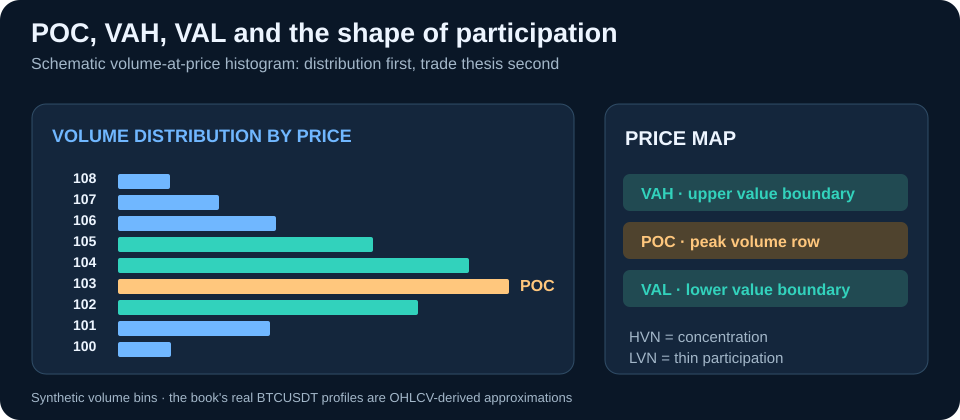

Price Alone Is Only Half the Story
Start with the factual observation that would qualify this concept. Do not allow the eventual chart outcome to change the definition.
Linked to original Chapter 1Free Google Books Preview
Read a free sample of this book on Google Books before you buy.
The original 16-chapter source develops a learning route from Price Alone Is Only Half the Story through Low-Volume Nodes: LVNs toward Session Volume Profile. This matters because a trading concept is useful only if the reader can explain where it fits, which evidence supports it, and how an opposing outcome would change the interpretation.
Expand any stage to see actual source headings. The groups are a reading aid rather than formally named parts of the book.
These subjects build on each other. The source sequence helps readers distinguish an attractive market description from a testable trading decision.
These subjects build on each other. The source sequence helps readers distinguish an attractive market description from a testable trading decision.
These subjects build on each other. The source sequence helps readers distinguish an attractive market description from a testable trading decision.
These subjects build on each other. The source sequence helps readers distinguish an attractive market description from a testable trading decision.
Start with the factual observation that would qualify this concept. Do not allow the eventual chart outcome to change the definition.
Linked to original Chapter 1Ask which earlier market assumptions the concept relies on. What alternative explanation would create a different reading?
Linked to original Chapter 9Write down what this idea could justify, what would invalidate it and how you would review the outcome without rewriting history.
Linked to original Chapter 16The source contents contain 16 consecutive numbered chapters, starting at “Price Alone Is Only Half the Story” and reaching “Session Volume Profile.”
Yes. The manuscript includes this topic as Chapter 2.
It is listed in Chapter 9, after the opening material and before later applications.
The closing numbered chapters include “Balance and Imbalance”, “Value Migration”, “Session Volume Profile”.
No. Chart-based methods can fail. Readers should evaluate risk, execution, transaction costs and the difference between illustrative examples and documented historical data.
Read the definitions, context and limitations together. The complete edition by Faramarz Kowsari expands beyond these chapter descriptions.
Get Volume Profile Trading on Google Play Books · Read the available preview
Educational content only, not investment advice. Patterns, schematic charts and historical examples do not guarantee future returns.
A common error in profile trading is to treat POC, VAH and VAL as automatic reversal levels. The source instead treats Volume Profile as a description of where business accumulated. Price can accept, reject or move through a reference area, and the distinction depends on auction behavior after the level is tested.

POC is the price row with the largest assigned volume in the selected range. The source says its location depends on the sample window, row size and data feed, and can migrate in a developing session. A historical POC is not obligated to act as support or resistance.
The source discusses a roughly 70% value-area convention, often expanded outward from POC. Platforms may use different tie-breaking or row-aggregation rules; VAH and VAL are boundaries of that chosen calculation, not mathematical walls around price.
An HVN marks substantial volume concentration or previously active two-sided trade. An LVN indicates comparatively thin participation. Neither automatically implies reversal or breakout without observing current acceptance and context.
The book contrasts a wick above VAH followed by sustained trading back inside value with a move that closes above VAH, holds a pullback and begins building volume higher. The same historical boundary can precede opposite auction outcomes.
Real-data qualification: The author's BTCUSDT figures use real one-minute OHLCV samples from the FLOX Foundation public GitHub dataset. However, a standard OHLCV bar does not reveal the exact number of transactions at every price. The source honestly calls its calculated profiles bar-derived approximations. The graphic above is a separate synthetic example for explaining POC, VAH and VAL, not a reproduction of exchange volume-at-price history.
POC represents past volume concentration. The source rejects treating it as a guaranteed magnet, support or resistance.
Not necessarily. Row size, interval selection, starting point, expansion and tie-breaking may differ, producing different VAH and VAL boundaries.
Yes. Its BTCUSDT observations come from a real OHLCV sample, while derived volume-at-price profiles are explicitly approximate, not transaction-level exchange records.
Explore the official book preview to inspect the original diagrams and explanatory material before purchasing. Examples and constructed charts do not predict future performance.
Explore the library by subject and find related books faster.
This title is part of the Faramarz Kowsari Trading Books Library, a dedicated collection of practical books on futures, options, order flow, Smart Money Concepts, technical analysis, scalping, swing trading, market-specific trading, risk and systematic research.
Browse related Order Flow, Volume & Market Microstructure books →